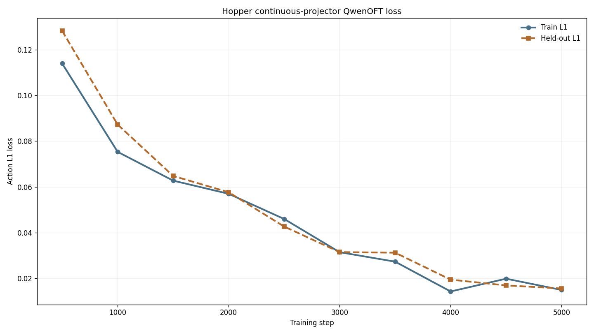

01 / Adaptation
Adaptation
The agent inspects the native three-actuator system and ordered eleven-dimensional observation, implements a task-owned wrapper, and checks applied torques and rendered inputs. State representation is evaluated separately from the environment adaptation.
Native 3D control and the complete 11D observation order
Runtime facts
Hopper-v4, Gymnasium 0.29.1, MuJoCo 3.3.7.- Action:
Box(-1,1,(3,),float32). - Observation:
Box(-inf,inf,(11,),float64). dt=0.008 s, frame skip 4, model timestep 0.002 s.- RGB render: 480×480×3 through NVIDIA EGL.
Experiment decisions
- Torque order: thigh, leg, foot; each clipped to
[-1,1]. - Pending no-op:
[0,0,0]. - State order: torso height/angle, three joint angles, torso x/z/angular velocities, and three joint angular velocities.
- 125 Hz environment and observation clocks; one raw frame per decision.
- Small-model training latency: zero raw frames.
RGB+state boundary: Sample Factory trains directly on the native 11D observation. Teacher export pairs the same ordered state with raw RGB, and QwenOFT consumes the native 3D action without bridge padding.
02 / Zero-latency small model training & evaluation
Zero-latency small model training & evaluation
The official MuJoCo recipe reaches a strong but variable policy
10,006,528environment frames
10,382 FPSmean throughput
3,206.405best training statistic
seed 3333training seed
The synchronous APPO run uses a 64×64 tanh MLP, rollout 64, batch 1,024, two epochs, learning rate 0.00295 with linear decay, and normalized inputs and returns. The curve shows rapid learning followed by substantial episode-window variance, consistent with occasional falls.

Training command and checkpoint
MUJOCO_GL=egl PYTHONPATH=. conda run -n latency \
python -m training.train \
--config configs/examples/gymnasium/hopper/small_model_train.yamlBest checkpoint: /mnt/checkpoints/latency-sensitive-bench/small_models/hopper_rgb_state/gymnasium_hopper_rgb_state_zero_latency_10m/checkpoint_p0/best_000011992_6139904_reward_3206.405.pth.
A single delayed frame prevents the learned gait from starting
2,682.095L0 / 0 ms return
8.647L1 / 8 ms return
8.140L2 / 16 ms return
9.122L3 / 24 ms return
10.225L4 / 32 ms return
The latency sweep should be read jointly with episode length. L0 contains two distinct modes: five complete runs around 3,570 return and five early falls around 1,680–1,850. Every delayed condition instead fails during initialization; the small increase from L2 to L4 only reflects one or two additional healthy-reward steps, not improved locomotion.


Evaluation command
MUJOCO_GL=egl PYTHONPATH=. conda run -n latency \
python -m latency_bench.run \
--config configs/examples/gymnasium/hopper/small_model_eval.yaml \
--checkpoint-path /mnt/checkpoints/latency-sensitive-bench/small_models/hopper_rgb_state/gymnasium_hopper_rgb_state_zero_latency_10m/checkpoint_p0/best_000011992_6139904_reward_3206.405.pthReturns and lengths are environment-native closed-loop outcomes
- Each small-model latency uses ten deterministic episode IDs and seed 3333; each VLA comparison uses the same 20 deterministic episode IDs and seed 3333.
- Latency is measured in raw Hopper frames: L1 is 8 ms, L2 16 ms, L3 24 ms, and L4 32 ms.
- The scheduler holds the current action and applies issued actions in FIFO order once ready.
- Return is the sum of native healthy, forward, and control-cost rewards.
- Length is raw environment steps before unhealthy termination or the 1,000-step TimeLimit.
- The VLA ablation changes only state encoding and run identity: both checkpoints use the same QwenOFT backbone, teacher data, native 3D action, L1 loss, 5,000 steps, batch 16, and action horizon 1.
03 / Zero-latency VLA training & evaluation
Zero-latency VLA training & evaluation
The continuous-state VLA remains 52.2% below the same-seed teacher at L0, despite the improvement over text-bin state encoding.
The best checkpoint yields 100 high-return L0 trajectories
100 / 165accepted / attempted
3,036–3,713accepted return range
88,212train rows
9,917validation rows
Rollout contract
- Explicit best checkpoint, latency zero, and maximum 1,000 raw frames.
- Strict episode gate: native return greater than 3,000;
filter=none. - 100 accepted episodes from 165 attempts; accepted lengths range from 816 to 1,000 steps.
- Each row stores one 224×224 raw RGB image, the ordered 11D state, and the exact applied 3D action.
- No context images or row-level filtering.
Converted dataset
- 90 train episodes and 10 validation episodes.
- Native action carrier:
action_dim=active_action_dim=3. uses_state=true,state_dim=11, train-derived min/max normalization.robot_type=rl_games_gymnasiumwith one latency prompt at L0.- No OpenVLA bridge padding or carrier dimension.
Hugging Face: the verified raw export is published at zero-latency raw demonstrations. The two parquet LFS SHA256 values and downloaded metadata bytes match the server source.
Direct continuous state substantially improves closed-loop control
8.2×L0 return vs text bins
4.75×L0 episode length
33.2×L2 return vs text bins
12.36×L2 episode length
The continuous-state run removes the 256-bin numeric string from the prompt and adds a learned 11 → hidden_dim projection to every action-query embedding. All other experiment settings remain fixed. At L0, mean return rises from 173.136 to 1,419.935 and mean length from 86.35 to 410.5. At L2, return rises from 9.513 to 315.890 and length from 10.0 to 123.6.


What the ablation establishes
- The continuous projector uses the same normalized 11D values already present in the LeRobot rows and live evaluator.
- The projector is registered under the existing action model and uses the same action-head learning rate.
- No rollout, conversion, action decoder, loss weighting, or latency contract changed.
- The saved checkpoint contains both
action_model.state_projector.weightandbias.
What remains unresolved
- No continuous-state L0 episode reaches 1,000 steps; lengths range from 240 to 746.
- L0 return reaches 47.8% of the same-seed teacher and length reaches 50.0%.
- L2 remains fragile: all episodes terminate at 122–125 steps despite the large improvement over ten steps.
- Only one training run and one evaluation seed block have been tested.
Offline/online reversal: the continuous run has a worse final validation L1 than the text-bin run, 0.01554 versus 0.01000, yet its L0 closed-loop return is 8.2× higher. Aggregate one-step validation loss would select the worse controller.
Continuous-state training and evaluation overrides
framework.action_model.loss_type=l1
framework.action_model.state_encoding=continuous_projector
trainer.max_train_steps=5000
datasets.vla_data.per_device_batch_size=16
trainer.gradient_accumulation_steps=1
MUJOCO_GL=egl PYOPENGL_PLATFORM=egl PYTHONPATH=. \
python -m latency_bench.run \
--config configs/examples/gymnasium/hopper/starvla_eval.yaml \
--checkpoint-path /mnt/checkpoints/latency-sensitive-bench/openvla_runs/hopper_rgb_state_l0_return_gt3000_100ep_openvla_native_continuous_projector_sft_5k/checkpoints/steps_5000_pytorch_model.pt \
--model-config-path /mnt/checkpoints/latency-sensitive-bench/openvla_runs/hopper_rgb_state_l0_return_gt3000_100ep_openvla_native_continuous_projector_sft_5k/config.full.yaml \
--output-dir /mnt/results/latency-sensitive-bench/tasks/hopper/starvla_eval_continuous_projectorOriginal text-bin failure diagnosis
0.00788text-bin final train loss
0.01000text-bin validation loss
173.136text-bin L0 return
86.35text-bin L0 length
The original QwenOFT run terminates after 82–93 steps at L0 and after exactly 10 steps at L2. A same-seed small-model control reaches 2,971.510 mean return and 820.3 mean length, with 13 of 20 episodes reaching the 1,000-step limit. The following diagnostics remain valid for that baseline and explain why better state conditioning alone does not close the full gap.

What was ruled out
- State/action dimensions, ordering, normalization, prompt, final checkpoint, and L0 timing match the frozen contract.
- Replaying recorded actions reproduces rewards and positions exactly, ruling out logger or action-application mismatch.
- The policy changes when the state changes; the 11D state interface is active rather than silently replaced by zeros.
- Initial evaluation states are covered by training initial states, and the same evaluation seeds do not rescue the VLA.
Primary failure mechanism
- VLA online states leave the teacher-data manifold: median normalized nearest-state distance is 0.168, versus 0.005 for successful teacher control.
- Nearest-state action MAE rises from 0.049 in steps 0–9 to 0.138 after step 50; the foot dimension contributes 0.266 MAE late in the episode.
- The VLA foot-action mean flips from the teacher's −0.120 to +0.335, while thigh saturation disappears.
- A teacher prefix of 1, 3, 10, or 50 steps does not improve survival; after a 50-step teacher prefix, VLA takeover still fails at mean total length 85.5.
Updated conclusion: text-token state representation was a major failure contributor, while the remaining teacher gap is consistent with closed-loop covariate shift under success-only one-step behavior cloning. The return-gated dataset still contains almost no recovery or pre-fall correction states.
Most direct corrective experiment
- Use the continuous-projector checkpoint—not the text-bin baseline—as the next rollout policy.
- Label its visited states with the small-model teacher, including pre-fall and recovery states, then retrain on the aggregated data.
- Track short closed-loop L0 survival during training; validation L1 alone ranks these two models incorrectly.
- Evaluate recovery-data training at both L0 and L2 before changing architecture or extending the SFT budget.
Source files and interpretation limits
Compact artifacts preserve every reported claim
Training
Evaluation
Rollout and conversion
VLA train and evaluation
final W&B summary · online run · L0/L2 summaries · L0 episodes
Continuous-state VLA
final W&B summary · online run · loss anchors · L0/L2 summaries · L0 episodes
Failure diagnosis
state/action analysis · state sensitivity · teacher-prefix intervention · same-seed teacher
Reproduction
media builder · 18 focused tests passed locally and remotely
The runtime contract follows the Gymnasium Hopper specification. The training recipe follows the vendored Sample Factory MuJoCo configuration and is compared against its published Hopper model record.
The continuous-state VLA is improved, not yet a replacement teacher
- One teacher-training seed and one run per VLA state encoding were evaluated; the ablation does not establish multi-seed robustness.
- The small-model training statistic 3,206.405 is not an evaluation mean; the same-seed teacher control used for the VLA comparison is 2,971.510 return over 820.3 steps.
- The continuous-state result isolates representation, but the randomly initialized projector adds parameters absent from the text-bin model.
- No continuous-state episode reaches the 1,000-step horizon, so the model remains unsuitable as the final Hopper teacher.
- The return gate excludes low-return failures and recovery behavior needed by an imperfect learned controller.
- The diagnostic nearest-neighbor action error is an interpretable teacher-reference proxy, not a counterfactual ground-truth action for every off-manifold state.
04 / Profiling
Profiling
Fresh RTX 3090 latency profile
This experiment : environment / observation FPS 10 / 10, original zero-latency QwenOFT, 224×224 input, one inference worker. Five sessions of ten episodes, each capped at 60 seconds with native termination. MuJoCo dynamics and the original observation stride are unchanged.
Measurement complete: five sessions × ten episodes, exit 0. 2,075 admitted / 2,076 attempted observations; 1 capacity drops. Complete profile uploaded; all 127 files verified. The measured profile is reused for the baseline and latency-conditioned training. Run ledger and evidence.
| Mean ± std | P50 | P95 | P99 | Maximum |
|---|---|---|---|---|
| 71.63 ± 2.03 ms | 71.57 ms | 74.11 ms | 76.97 ms | 112.14 ms |
Source run the archived run. Canonical observation-to-action samples exclude warmup; capacity drops do not receive fabricated latency values. Measured summary · Profile manifest.
05 / Baseline VLA evaluation
Baseline VLA evaluation
Zero-latency VLA at 10 FPS on RTX 3090
This experiment completed 20 episodes, seeds 42–61, at environment / observation FPS 10 / 10. The exact zero-latency model from profiling was evaluated with 224×224 input, its original state/action encoding, one inference worker and measured realtime latency. The original 3,600-step evaluation cap and native 1,000-step TimeLimit were preserved.
| Episodes | Return mean ± std | Mean steps | Latency mean / P95 | Admitted / attempted | Observation drops | Action drops / invalid |
|---|---|---|---|---|---|---|
| 20 | 67.88 ± 150.09 | 31.15 | 71.58 / 74.45 ms | 622 / 623 | 1 | 0 / 0 |
0/20 episodes reached the native 1,000-step limit; 20/20 ended earlier. Recorded episode endings do not separate terminated and truncated flags. Measured latency uses admitted canonical observation-to-action samples and excludes warmup; drops are counted separately.
Verified summary · Per-episode results · Model and evaluation contract · Stage ledger and complete evidence.
06 / Profile-latency small model training & evaluation
Profile-latency small model training & evaluation
| Stage | Episodes | Return mean ± std | Mean steps | Evidence |
|---|---|---|---|---|
| E | 10 | 3,657.61 ± 13.88 | 1,000.00 | Summary |
Run the archived run reuses the completed profile and realtime baseline above. H100 small-model training completed the original 10M-frame APPO budget (actual 10,006,528), seed 3333, with the new measured IID profile and 10 / 10 FPS clocks. The original best-reward rule selected the checkpoint at 7,684,096 frames. Native physics, state/action ordering and raw-step budgets are preserved. The complete teacher bundle is uploaded and all 14 files verified; simulated evaluation is complete.
Teacher gate evidence: E completed with exit code 0; all 10 episodes exceed 3,000 and reach 1,000 steps (range 3,623.79–3,677.32). It admits 9,994 / 10,000 observations with 6 observation drops and zero dropped or invalid actions. A separate bounded action-delay-IID exporter probe passed the original gate in 10/12 episodes. The effective gate therefore remains strict return >3,000; no reduction is needed.
07 / Profile-latency VLA training & evaluation
Profile-latency VLA training & evaluation
Collection accepted 100 / 129 attempts (29 rejected). Replay and conversion completed 98,817 rows (88,817 train / 10,000 validation); all 100 actual episode returns exceed 3,000 (minimum 3,057.75; mean 3,633.19) and match their probe seed, split, length and return exactly. VLA training completed all 5,000 steps with exit code 0; online W&B is finished. Final train loss is 0.01426934 and held-out L1 is 0.01595611 over 3,200 samples. The complete inference bundle (22 files) is uploaded and every file hash is verified. RTX 3090 F completed all 20 episodes with exit code 0. Its actual input is 224×224 RGB plus the ordered 11D state, using trained prompt key 1. Completion evidence. Matched B/F evaluation improves mean return from 67.88 to 424.58 (6.26×, paired mean gain +356.70), with all 20 seeds improving. Mean length rises from 31.15 to 139.45 steps; no F episode reaches the 1,000-step limit (range 94–309). All 2,789 observations were admitted, with zero observation drops, dropped actions or invalid actions. This remains far below the separately evaluated teacher; one training run and 20 paired seeds do not establish robust control.
| Training condition | Evaluation condition | Episodes | Return mean ± std | Mean steps | Latency mean / P95 | Status |
|---|---|---|---|---|---|---|
| Zero-latency VLA | 3090 measured realtime, 10/10 FPS | 20 | 67.88 ± 150.09 | 31.15 | 71.58 / 74.45 ms | DONE · B |
| Profile-latency small model | Simulated IID, one worker pool, 10/10 FPS | 10 | 3,657.61 ± 13.88 | 1,000 | 71.64 / 74.12 ms | DONE · E |
| Profile-latency VLA | 3090 measured realtime, 10/10 FPS | 20 | 424.58 ± 348.01 | 139.45 | 71.64 / 73.57 ms | DONE · F |
F episode results · F validation · Complete evidence hashes.
Verified final VLA bundle · Model upload receipt.
Frozen data and VLA contract: retain 100 accepted episodes, 224×224 RGB, ordered 11D state and native 3D torques. The original strict return >3,000 gate was preserved throughout the completed collection. The VLA uses the original continuous projector and 5,000-step recipe with online W&B. The Ant-specific gate revision is not used for Hopper. Training/export use action-delay IID; E additionally models worker occupancy. F repeats B's 20 seeds (42–61), 3,600-step outer cap and native 1,000-step TimeLimit.
Raw data are archived in Standard-Pipeline; converted data are generated on the training server. The original raw/conversion publication audit verified 123 files (5.084 GB). Upload receipts · Materialized episode audit · VLA data binding.